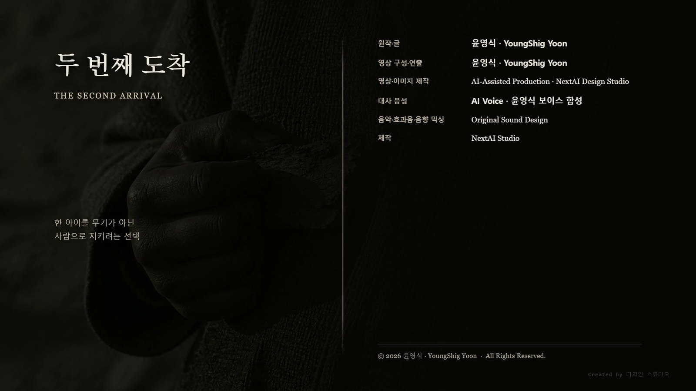

一. 열일곱 해
지구의 대기는 말데크의 대기보다 무거웠다.
열일곱 해가 지났는데도 라스는 아침마다 그 무게를 다시 느꼈다. 중력값은 이미 외웠고 하중 계산은 손이 먼저 움직였다. 그런데도 몸은 매번 반 박자 늦게 반응했다. 숫자가 틀린 것이 아니었다. 숫자에 들어오지 않는 무언가가 몸을 끌고 있었다.
고산지대의 정착지는 세 층으로 앉아 있었다. 위쪽에는 치우 생존자들이, 중턱에는 르네가 세운 저장고와 관측대가, 아래쪽에는 이 땅에 원래 살던 사람들의 마을이 있었다.
세 층은 섞이지 않았다. 다만 물길과 바람이 지나는 자리는 공유했다.
아라는 관측대 바깥의 돌 앞에 앉아 있었다. 다듬지 않은 돌이었다. 말데크의 관측소에서 쓰던 것과 같은 방식으로 놓았지만, 이곳의 돌은 일곱 개가 아니라 두 개였다.
열일곱 해 동안 아라가 지구에 놓은 표지는 모두 열두 곳이었다.
어느 곳에도 건물을 세우지 않았다. 세우면 세운 것이 남고, 남은 것은 방향을 고정한다. 그것이 말데크에서 배운 것이었다.
아라: "지구가 우리를 밀어내고 있어."
라스: "행성은 밀어내지 않아."
아라: "그럼 누가?"
라스: "중력."
아라: "중력은 이름이야."
라스: "이름이 있으면 측정할 수 있어."
두 사람은 열일곱 해 동안 같은 대화를 여러 번 했다. 결론이 나지 않아서가 아니었다. 결론이 나면 한쪽이 사라진다는 것을 둘 다 알았기 때문이다.
二. 돌에 손을 댄 아이
윤서는 아래 마을에 살았다.
물을 길으러 올라오는 길이 관측대 옆을 지났고, 그 길가에 아라의 돌 두 개가 있었다. 마을 어른들은 그 돌을 건드리지 말라고 했다. 위쪽 사람들의 것이라고만 했다.
윤서는 열두 살이었고, 건드리지 말라는 말은 언제나 왜냐는 질문으로 들렸다.
그날 윤서는 물통을 내려놓고 돌에 손을 댔다.
돌은 차가웠다. 그게 전부여야 했다.
그런데 손바닥 아래에서 무언가가 방향을 가졌다.
소리가 아니었다. 그림도 아니었다. 윤서는 그것을 나중에 한 문장으로만 말할 수 있었다.
저쪽으로 가면 덜 아프다.
윤서는 손을 뗐다. 방향이 사라졌다. 다시 손을 댔다. 방향이 돌아왔다.
관측대 안에서 아라가 눈을 떴다.
열일곱 해 동안 지구의 표지는 아무에게도 응답하지 않았다. 표지는 치우의 감응망에 연결되어 있었고, 지구인은 그 망에 들어오는 신경 구조를 갖고 있지 않았다.
그런데 열두 표지 중 하나가 지금 응답하고 있었다.
三. 두 개의 해석
라스는 그 시각 관측대의 정렬 기록을 보고 있었다.
같은 순간, 르네 저장고의 세 겹 구조물 정렬값이 아주 조금 흔들렸다. 바깥 정렬층이 기준을 다시 잡았고, 중간 하중층이 그 값을 따라 미세하게 이동했다.
라스는 기록을 세 번 확인했다.
아라: "인간이 표지에 응답했어."
라스: "인간이 내 정렬층을 흔들었어."
아라: "같은 사건이야."
라스: "같은 사건인데 결과가 달라."
아라가 본 것은 가능성이었다. 인간의 신경계가 치우의 감응망에 들어올 수 있다면, 두 종족은 처음으로 사라지지 않는 방법을 갖게 된다. 기억을 남길 상대가 생기기 때문이다.
라스가 본 것은 오차였다. 인간이 정렬층을 흔들 수 있다면, 르네가 지구에 세운 모든 구조물의 기준값이 인간의 존재만으로 매일 조금씩 어긋난다.
라스: "네 쪽에서는 문이 열린 거고, 내 쪽에서는 축이 틀어진 거야."
아라: "너는 늘 틀어진 쪽만 봐."
라스: "틀어진 쪽을 안 보면 말데크가 돼."
아라는 대답하지 않았다.
四. 하늘이 갈라지다
사흘 뒤, 지구의 밤이 세 겹으로 갈라졌다.
궤도 위에 검은 원이 열렸다. 하나가 아니었다. 대륙의 가장자리를 따라 스물세 개가 동시에 열렸다. 바깥에는 금속 고리가 수없이 겹쳐 있었고, 가운데에는 빛이 하중처럼 쌓였다. 안쪽은 비어 있었다.
그 빈 공간은 아무것도 없는 공간이 아니었다. 무언가가 도착할 자리였다.
라스는 고리 수와 하중층 두께를 읽었다. 세 번 읽었다.
라스: "정찰대가 아니야."
아라: "그럼."
라스: "화성에 남아 있던 전 병력이야."
라스의 계측 화면에 문장이 나타났다.
말데크 전범 라스.
치우 반란군 아라.
도착 허가를 취소한다.라스: "우리는 이미 도착했어."
응답은 즉시 돌아왔다.
그렇다면 제거한다.
첫 번째 광자포가 발사됐다.
빛은 하늘을 가로지르지 않았다. 고산지대 안쪽에 갑자기 도착했다.
산 하나가 수직으로 잘려 나갔다.
두 번째와 세 번째가 이어졌다. 정착지 아래의 계곡이 통째로 내려앉았고, 물길이 방향을 잃고 역류했다. 열일곱 해 동안 쌓은 저장고 중 넷이 한 번에 사라졌다.
라스는 남은 저장고의 외벽을 뜯어 세 개의 금속 기둥을 세웠다. 기둥은 땅에 박히지 않았다. 지하 광물층과 정렬되며 허공에 매달렸다.
바깥 정렬층이 열리고, 중간 하중층이 빛을 받았다. 안쪽 빈 공간으로 도착한 광자 에너지가 기둥 사이에서 멈췄다.
라스는 포탄을 막은 것이 아니었다.
포탄이 도착할 수 있는 조건을 없앤 것이다.
세 개의 기둥이 막을 수 있는 것은 세 방향이었다. 하늘에는 스물세 개가 열려 있었다.
라스: "아래 마을을 버려야 해. 공격축이 고정됐어."
아라: "그곳에 사람들이 있어."
라스: "그래서 버리는 거야."
五. 남쪽
아라는 관측대 바닥의 금속판 위에 손을 올렸다.
손이 닿지 않았는데도 금속 아래의 광물이 낮게 울렸다.
지구 곳곳에 흩어진 열두 표지가 하나씩 깨어났다.
두 개.
세 개.
열두 개.
돌은 서로에게 명령하지 않았다. 다만 어느 방향으로 가면 죽음의 가능성이 조금 낮아지는지를 보냈다.
지금까지 그 신호는 언제나 허공으로 흩어졌다. 받을 수 있는 신경이 지구에 없었기 때문이다.
이번에는 달랐다.
윤서가 마을 한가운데에 서 있었다. 사흘 전 돌에 손을 댄 뒤로, 손바닥 아래의 그 방향이 완전히 사라지지 않았다.
윤서는 동생의 손을 잡았다.
그리고 남쪽으로 몸을 돌렸다.
누구도 남쪽으로 가라고 말하지 않았다. 그런데 마을 사람들이 같은 순간 같은 방향으로 몸을 틀었다.
한 사람이 방향을 받았고, 나머지는 그 사람을 따라갔다.
관측대에서 아라가 그것을 느꼈다.
열일곱 해 만에 처음으로, 표지의 신호가 지구 위에서 도착지를 가졌다.
동생: "언니, 저 위에 뭐가 있어?"
윤서는 하늘을 보았다. 구름 사이로 금속선들이 내려오고 있었다.
윤서: "하늘이 아니야."
윤서는 그 다음 말을 자기가 왜 아는지 알지 못했다.
윤서: "하늘을 뚫고 들어오는 명령이야."
六. 사라진 아이
함대가 전술을 바꾸었다.
궤도의 큰 관문들이 닫혔다. 대신 작은 관문 수백 개가 산맥과 물길과 마을 위에 동시에 나타났다.
관문은 건물이 아니었다. 공중에 떠 있는 세 겹의 단면들이었다. 바깥 고리가 지형을 측정하고, 중간층이 도착 충격을 흡수하며, 빈 안쪽에서 르네 병사와 자동 포탑이 쏟아졌다.
산 위쪽에서 치우 생존자들이 공격 의도를 감지하려 했다. 그런데 아무것도 잡히지 않았다.
르네 병사들이 의도 없이 움직이는 것은 아니었다. 전투 의도를 자신들의 기계에 맡긴 것이었다.
치우의 예지가 처음으로 비었다.
그 순간 감응망에 과부하가 걸렸다. 열두 표지가 동시에 신호를 밀어내는데 받는 쪽은 하나였다.
윤서의 몸이 멈췄다.
동생이 손을 놓지 않았는데도, 윤서는 그 자리에서 사라진 것처럼 서 있었다. 눈은 뜨고 있었고 숨도 쉬었다. 다만 안에 아무도 없었다.
아라가 달려 내려왔다.
아라: "안으로 들어갔어."
라스: "어디로."
아라: "우리가 열일곱 해 동안 쌓은 곳으로."
감응망 안쪽에는 말데크에서 살아남은 자들의 기억이 그대로 있었다. 어머니가 부르던 노래. 몸을 잃은 자의 혼란. 마지막 바다를 기억하는 자의 침묵.
지구인 아이 하나가 그 안에 떨어졌다.
그리고 하늘에서 관문 수백 개가 동시에 흔들렸다.
라스의 화면에서 정렬값이 무너지고 있었다. 바깥 고리가 지형을 다시 측정했고, 다시 측정할 때마다 다른 값이 나왔다. 자동 포탑들이 조준을 잡지 못하고 같은 자리를 세 번씩 겨눴다.
라스는 그 이유를 알았다.
인간의 신경이 감응망 안에 들어가 있었다. 그리고 그 감응망은 지구의 광물층을 따라 르네 정렬층과 같은 자리를 지나고 있었다.
아이가 안에 있는 동안, 르네는 지구 어디에도 정확히 도착할 수 없었다.
七. 되돌림
아라: "빼내야 해."
라스는 화면에서 눈을 떼지 않았다.
라스: "빼내면 정렬이 돌아와."
아라: "알아."
라스: "돌아오면 저들이 다시 조준해."
아라: "그것도 알아."
두 사람 사이에 스물세 개의 관문이 떠 있었다. 아이 하나가 그 전부를 멈추고 있었다.
라스는 열일곱 해 전을 생각했다. 말데크의 정렬축 앞에서 그는 값 하나를 지우지 않고 남겼다. 그때 그는 명령을 어긴 것이 아니라 명령의 결과를 자기 손에 남긴 것이었다.
지금은 반대였다. 아무것도 하지 않으면 이긴다.
라스: "저 아이는 지금 무기야."
아라: "저 아이는 지금 열두 살이야."
라스는 대답하지 않았다. 대신 저장고의 출력을 내리기 시작했다.
아라는 감응망 안으로 손을 넣었다.
윤서를 끌어내려면 밖에서 당길 것이 필요했다. 아이가 붙잡을 수 있을 만큼 무겁고, 아이의 것이 아닌 기억이어야 했다.
아라는 자기 것 중에서 가장 무거운 것을 꺼냈다.
말데크가 접히던 밤.
먼저 모든 소리가 사라지고, 그 다음 대륙이 접히던 순간. 바다가 위로 솟고 산맥이 뿌리부터 끊기던 장면. 아라가 열일곱 해 동안 누구에게도 보여주지 않은 기억이었다.
그것을 감응망 안에 놓았다.
윤서가 그 기억을 향해 움직였다. 자기 기억이 아니었기 때문에, 아이는 그것이 어느 쪽이 바깥인지 알려주는 표지라는 것을 알았다.
그런데 감응망이 아이를 놓지 않았다. 르네 정렬값이 감응 신호와 겹쳐 아이를 붙들고 있었다.
라스가 바깥 정렬층부터 차례로 껐다.
정렬층이 꺼질 때마다 광자포를 막던 기둥이 하나씩 힘을 잃었다. 세 번째 기둥을 끄면 정착지 전체가 열린다.
라스는 두 번째까지 껐다.
라스: "여기까지야."
아라: "조금 더."
라스: "조금 더 끄면 다 죽어."
아라: "그럼 여기까지로 해."
열린 만큼의 공간으로 아라의 감응이 들어갔다.
윤서가 숨을 크게 쉬었다.
아이가 돌아왔다.
그리고 하늘의 정렬값이 복구됐다.
관문 수백 개가 다시 같은 방향을 잡았다. 자동 포탑들이 조준을 되찾았다. 라스의 화면에 정착지의 좌표가 선명하게 떴다.
라스는 그 좌표를 보면서 아무것도 하지 않았다.
그때 궤도의 관문들이 닫히기 시작했다.
승리해서가 아니었다. 스물세 개의 관문이 열려 있는 동안 지구 전역의 정렬 기준이 한 번 무너졌고, 르네의 규격은 무너진 기준으로 두 번째 작전을 시작하지 못한다. 모든 부품이 같은 방식으로 반응하도록 만들어졌기 때문이다.
기준을 다시 세우려면 처음부터 측정해야 했다.
함대는 물러났다. 좌표는 가져갔다.
라스의 외골격이 갈라졌다. 꺼진 정렬층의 하중이 그의 장치로 돌아왔기 때문이다. 그는 무릎을 꿇었지만 쓰러지지는 않았다.
아라: "얼마나 남았어?"
라스: "저들이 기준을 다시 세울 때까지."
아라: "그게 얼마인데."
라스: "그건 내 쪽 계산이 아니야. 이제는."
라스는 자기 정렬 기록을 열었다. 아이 하나가 어떻게 지구 전체의 정렬층을 무너뜨렸는지, 그 경로가 어디를 지나갔는지 화면에 남아 있었다.
경로는 지하로 이어져 있었다.
열일곱 해 동안 그가 세운 적 없는 구조물 쪽이었다.
아라는 마을 쪽을 보았다.
윤서가 물통 옆에 앉아 있었다. 아이의 손에는 종이도 광물도 아닌 얇은 것이 들려 있었다. 마을에서 기록에 쓰는 나무껍질 조각이었다.
아이는 그 위에 아무것도 쓰지 않았다.
대신 손톱으로 눌렀다.
한 번, 그리고 조금 방향을 틀어 한 번 더.
윤서는 자기가 왜 두 번째를 조금 틀었는지 설명하지 못했다. 다만 그렇게 하지 않으면 첫 번째 자국이 무엇을 가리키는지 알 수 없다고 느꼈다.
아이는 그것을 접어 품에 넣었다.
라스는 갈라진 외골격 사이로 자기 계측 화면을 보았다. 화면에 세 단어가 떠 있었다.
ARRIVE
DESTROY
DEFEND
세 번째 단어의 한 글자가 번져 있었다.
라스는 그것을 고치지 않았다.
화면은 꺼지지 않았다. 전쟁이 끝나지 않았기 때문이다.
말데크에서 잃은 것은 행성이었고, 지구에서 시작된 것은 전선이었다.
